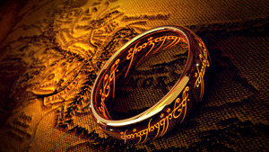

it began with the forging of the great rings

My favorite movie when I was growing up was The Lord of the Rings. I watched it several times at my friend's house because he had a tape of this movie. Back then, the only way to watch The Lord of the Rings was through a tape. Either you rented one at a store or borrowed it from someone you knew who had it. I was lucky enough at the age of four that my friend had a copy of this amazing movie. I liked this movie a lot, and my favorite hero back then was Legolas. I think it's just so cool to be an elf; you are immortal, and he is really an amazing marksman. My friend's favorite character, on the other hand, was Gandalf. He is such a powerful wizard.
Making this webpage reminded me of the memories with my friend watching The Lord of the Rings together. We would binge-watch it starting with The Fellowship of the Ring, moving to The Two Towers, and ending with The Return of the King. I wish I had time to binge watch it again. The last time I watched this movie was before I left for my mission. I remember the wife of our mission president asking me on my first day in the mission field what my life was like before I served a mission. I responded that I binge-watched The Lord of the Rings, I also talked about the newly released prequel at that time called The Rings of Power